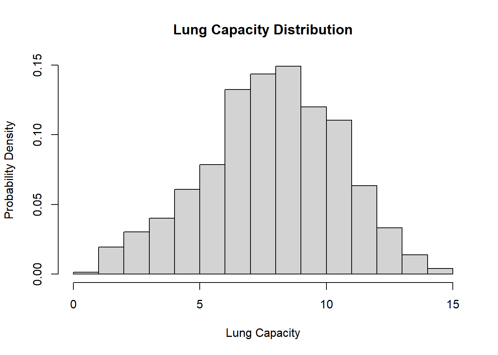
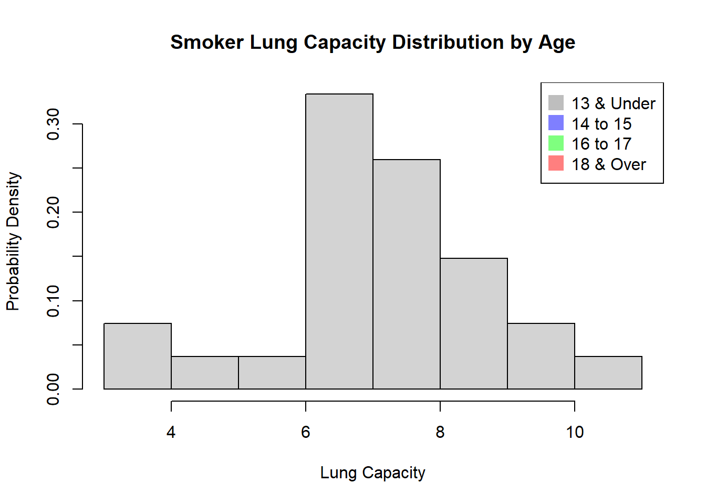
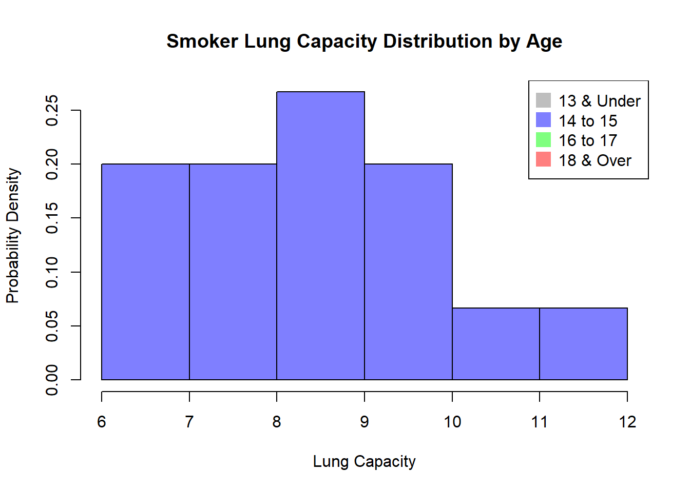
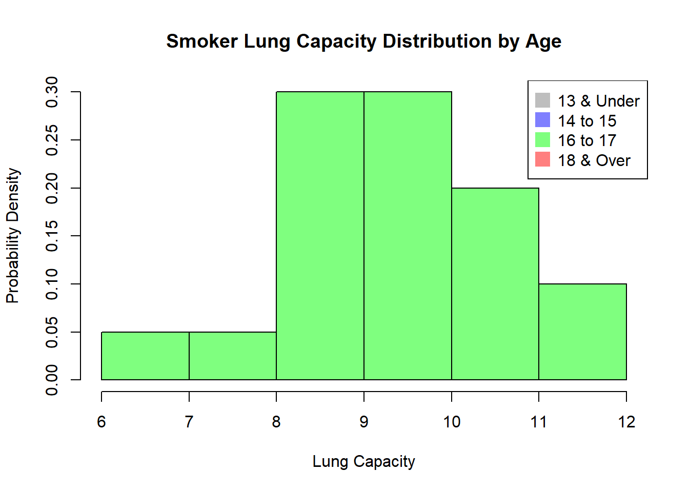
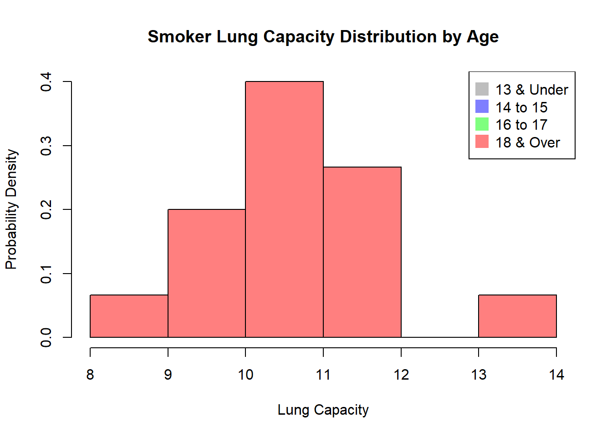
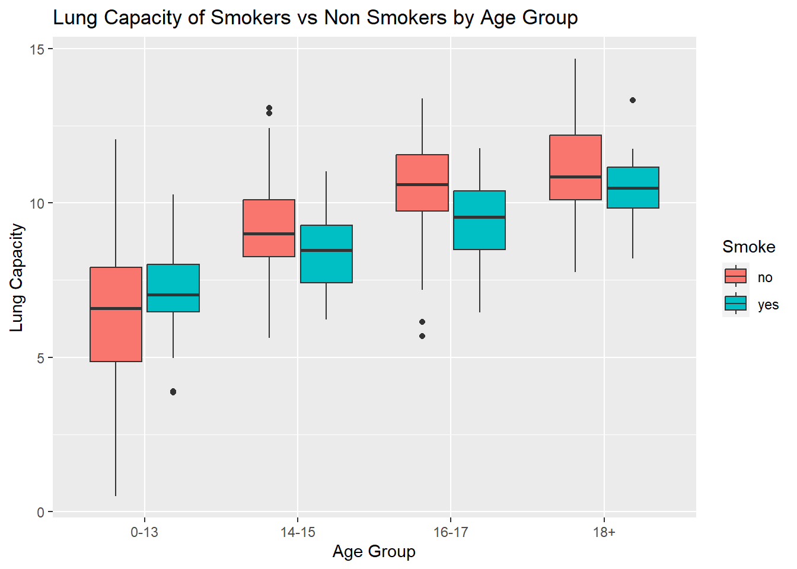
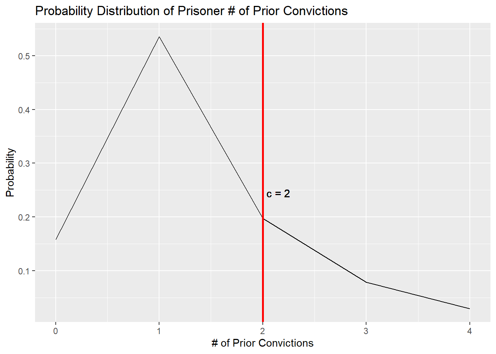

Code
library(tidyverse)
library(readxl)
knitr::opts_chunk$set(echo = TRUE)Alexis Gamez
February 20, 2023
First, let’s read in the data from the Excel file:
[1] "C:/Users/Leshiii/Desktop/DACSS Master's/DACSS 603/603_Spring_2023/posts"The distribution of LungCap looks as follows:

The histogram suggests that the distribution is close to a normal distribution. Most of the observations are close to the mean. Very few observations are close to the margins (0 and 15).
Provided below is a box plot of the probability distributions of the Lung Capacity data for the male and female genders.
I don’t believe the data provided below make much sense. I would argue that it is much more likely for smokers to have a smaller lung capacity than those that do not smoke. I suspect that something could be going on with our sample.
Comparing the charts below, we can see that as the participant ages, the mean and ranges of Lung Capacity increases. This could be due to natural maturation, with Lungs growing as children grow to adolescents, stalling circa 18 years old. However, I suspect there might be more to it, particularly our sample of smokers being so small compared to that of non-smokers.
no_smoke_mean <- mean(no_smoke$LungCap)
`13_under` <- subset(yes_smoke, Age <= 13)
`14_to_15` <- subset(yes_smoke, subset = Age == 14 | Age == 15)
`16_to_17` <- subset(yes_smoke, subset = Age == 16 | Age == 17)
`18_over` <- subset(yes_smoke, Age >= 18)
hist(`13_under`$LungCap, main = "Smoker Lung Capacity Distribution by Age", xlab = "Lung Capacity", ylab = "Probability Density", prob = TRUE)
legend("topright", legend=c("13 & Under","14 to 15", "16 to 17", "18 & Over"), col=c("gray", rgb(0,0,1,0.5),
rgb(0,1,0,0.5), rgb(1,0,0,0.5)), pt.cex=2, pch=15)
hist(`14_to_15`$LungCap, prob = TRUE, col = rgb(0,0,1,0.5), main = "Smoker Lung Capacity Distribution by Age", xlab = "Lung Capacity", ylab = "Probability Density")
legend("topright", legend=c("13 & Under","14 to 15", "16 to 17", "18 & Over"), col=c("gray", rgb(0,0,1,0.5),
rgb(0,1,0,0.5), rgb(1,0,0,0.5)), pt.cex=2, pch=15)
hist(`16_to_17`$LungCap, prob = TRUE, col = rgb(0,1,0,0.5), main = "Smoker Lung Capacity Distribution by Age", xlab = "Lung Capacity", ylab = "Probability Density")
legend("topright", legend=c("13 & Under","14 to 15", "16 to 17", "18 & Over"), col=c("gray", rgb(0,0,1,0.5),
rgb(0,1,0,0.5), rgb(1,0,0,0.5)), pt.cex=2, pch=15)
hist(`18_over`$LungCap, prob = TRUE, col = rgb(1,0,0,0.5), main = "Smoker Lung Capacity Distribution by Age", xlab = "Lung Capacity", ylab = "Probability Density")
legend("topright", legend=c("13 & Under","14 to 15", "16 to 17", "18 & Over"), col=c("gray", rgb(0,0,1,0.5),
rgb(0,1,0,0.5), rgb(1,0,0,0.5)), pt.cex=2, pch=15)
df_Agegroup <- df %>%
mutate(
Age_group = dplyr::case_when(
Age <= 13 ~ "0-13",
Age > 13 & Age <= 15 ~ "14-15",
Age > 15 & Age <= 17 ~ "16-17",
Age >= 18 ~ "18+"))
ggplot(data = df_Agegroup, aes(x=Age_group, y=LungCap)) +
geom_boxplot(aes(fill=Smoke)) +
labs(x="Age Group",y="Lung Capacity",title="Lung Capacity of Smokers vs Non Smokers by Age Group")
Looking at the box plot above, its seems as though the ranges of data for the latter 3 age group divisions are naturally larger for non-smokers than for smokers. Additionally, the means for said divisions under non-smokers are also higher! What seems to be skewing the data is the large quantity of participants equal to 13 years of age or younger. I believe this is why our data hasn’t made much sense until now. There might be other factors in play here, like respondent bias, but I believe the sample size here is the main influence.
Let X = Number of prior convictions
Sample = 810 prisoners
Reading in our data.
The probability of that a randomly selected inmate has exactly 2 prior convictions is:
The probability that a randomly selected inmate has fewer than 2 prior convictions is:
The probability that a randomly selected inmate has 2 or fewer prior convictions is:
The probability that a randomly selected inmate has more than 2 prior convictions is:
The expected value for the number of prior convictions is:
The variance for prior convictions is:
The standard deviation for prior convictions is:
Plotting our data further validates our calculations as all values we’ve presented seem to coincide with their respective points on the plot.
Warning: Using `size` aesthetic for lines was deprecated in ggplot2 3.4.0.
ℹ Please use `linewidth` instead.
---
title: "Blog Post #1"
author: "Alexis Gamez"
description: "DACSS 603 HW#1"
date: "02/20/2023"
format:
html:
toc: true
code-fold: true
code-copy: true
code-tools: true
categories:
- hw1
- desriptive statistics
- probability
---
```{r}
#| label: setup
#| warning: false
library(tidyverse)
library(readxl)
knitr::opts_chunk$set(echo = TRUE)
```
# Question 1
## a)
First, let's read in the data from the Excel file:
```{r}
getwd()
df <- read_excel("_data/LungCapData.xls")
```
The distribution of LungCap looks as follows:
```{r}
hist(df$LungCap, main = "Lung Capacity Distribution", xlab = "Lung Capacity", ylab = "Probability Density", prob = TRUE)
```
The histogram suggests that the distribution is close to a normal distribution. Most of the observations are close to the mean. Very few observations are close to the margins (0 and 15).
## b)
Provided below is a box plot of the probability distributions of the Lung Capacity data for the male and female genders.
```{r}
boxplot(df$LungCap ~ df$Gender,
ylab = "Gender",
xlab = "Lung Capacity",
horizontal = TRUE,
col = "maroon")
```
## c)
I don't believe the data provided below make much sense. I would argue that it is much more likely for smokers to have a smaller lung capacity than those that do not smoke. I suspect that something could be going on with our sample.
```{r}
boxplot(df$LungCap ~ df$Smoke,
ylab = "Smoking Preference",
xlab = "Lung Capacity",
horizontal = TRUE,
col = "bisque")
no_smoke <- subset(df, Smoke == "no")
yes_smoke <- subset(df, Smoke == "yes")
mean(no_smoke$LungCap)
mean(yes_smoke$LungCap)
```
## d)
Comparing the charts below, we can see that as the participant ages, the mean and ranges of Lung Capacity increases. This could be due to natural maturation, with Lungs growing as children grow to adolescents, stalling circa 18 years old. However, I suspect there might be more to it, particularly our sample of smokers being so small compared to that of non-smokers.
```{r}
no_smoke_mean <- mean(no_smoke$LungCap)
`13_under` <- subset(yes_smoke, Age <= 13)
`14_to_15` <- subset(yes_smoke, subset = Age == 14 | Age == 15)
`16_to_17` <- subset(yes_smoke, subset = Age == 16 | Age == 17)
`18_over` <- subset(yes_smoke, Age >= 18)
hist(`13_under`$LungCap, main = "Smoker Lung Capacity Distribution by Age", xlab = "Lung Capacity", ylab = "Probability Density", prob = TRUE)
legend("topright", legend=c("13 & Under","14 to 15", "16 to 17", "18 & Over"), col=c("gray", rgb(0,0,1,0.5),
rgb(0,1,0,0.5), rgb(1,0,0,0.5)), pt.cex=2, pch=15)
hist(`14_to_15`$LungCap, prob = TRUE, col = rgb(0,0,1,0.5), main = "Smoker Lung Capacity Distribution by Age", xlab = "Lung Capacity", ylab = "Probability Density")
legend("topright", legend=c("13 & Under","14 to 15", "16 to 17", "18 & Over"), col=c("gray", rgb(0,0,1,0.5),
rgb(0,1,0,0.5), rgb(1,0,0,0.5)), pt.cex=2, pch=15)
hist(`16_to_17`$LungCap, prob = TRUE, col = rgb(0,1,0,0.5), main = "Smoker Lung Capacity Distribution by Age", xlab = "Lung Capacity", ylab = "Probability Density")
legend("topright", legend=c("13 & Under","14 to 15", "16 to 17", "18 & Over"), col=c("gray", rgb(0,0,1,0.5),
rgb(0,1,0,0.5), rgb(1,0,0,0.5)), pt.cex=2, pch=15)
hist(`18_over`$LungCap, prob = TRUE, col = rgb(1,0,0,0.5), main = "Smoker Lung Capacity Distribution by Age", xlab = "Lung Capacity", ylab = "Probability Density")
legend("topright", legend=c("13 & Under","14 to 15", "16 to 17", "18 & Over"), col=c("gray", rgb(0,0,1,0.5),
rgb(0,1,0,0.5), rgb(1,0,0,0.5)), pt.cex=2, pch=15)
```
## e)
```{r}
df_Agegroup <- df %>%
mutate(
Age_group = dplyr::case_when(
Age <= 13 ~ "0-13",
Age > 13 & Age <= 15 ~ "14-15",
Age > 15 & Age <= 17 ~ "16-17",
Age >= 18 ~ "18+"))
ggplot(data = df_Agegroup, aes(x=Age_group, y=LungCap)) +
geom_boxplot(aes(fill=Smoke)) +
labs(x="Age Group",y="Lung Capacity",title="Lung Capacity of Smokers vs Non Smokers by Age Group")
```
Looking at the box plot above, its seems as though the ranges of data for the latter 3 age group divisions are naturally larger for non-smokers than for smokers. Additionally, the means for said divisions under non-smokers are also higher! What seems to be skewing the data is the large quantity of participants equal to 13 years of age or younger. I believe this is why our data hasn't made much sense until now. There might be other factors in play here, like respondent bias, but I believe the sample size here is the main influence.
# Question 2
Let X = Number of prior convictions
Sample = 810 prisoners
## a)
Reading in our data.
```{r}
Convictions <- seq(0,4)
Freq <- c(128, 434, 160, 64, 24)/810
```
The probability of that a randomly selected inmate has exactly 2 prior convictions is:
```{r}
dbinom(x=1, size = 1, prob = 160/810)
```
## b)
The probability that a randomly selected inmate has fewer than 2 prior convictions is:
```{r}
dbinom(x = 1, size = 1, prob = (128+434)/810)
```
## c)
The probability that a randomly selected inmate has 2 or fewer prior convictions is:
```{r}
dbinom(x = 1, size = 1, prob = (128+434+160)/810)
```
## d)
The probability that a randomly selected inmate has more than 2 prior convictions is:
```{r}
dbinom(x = 1, size = 1, prob = (64+24)/810)
```
## e)
The expected value for the number of prior convictions is:
```{r}
Expected_v <- sum(Freq*Convictions)
Expected_v
```
## f)
The variance for prior convictions is:
```{r}
Variance <- sum((Convictions-Expected_v)^2*Freq)
Variance
```
The standard deviation for prior convictions is:
```{r}
SD <- sqrt(Variance)
SD
```
Plotting our data further validates our calculations as all values we've presented seem to coincide with their respective points on the plot.
```{r}
Conv_data <- tibble(
x= Convictions,
y= Freq)
ggplot(Conv_data, aes(x,y))+
geom_line()+
geom_vline(xintercept = 2, col="red",size=1)+
geom_text(x=2.15,y=.245,label="c = 2")+
labs(x="# of Prior Convictions",y="Probability",title="Probability Distribution of Prisoner # of Prior Convictions")
```